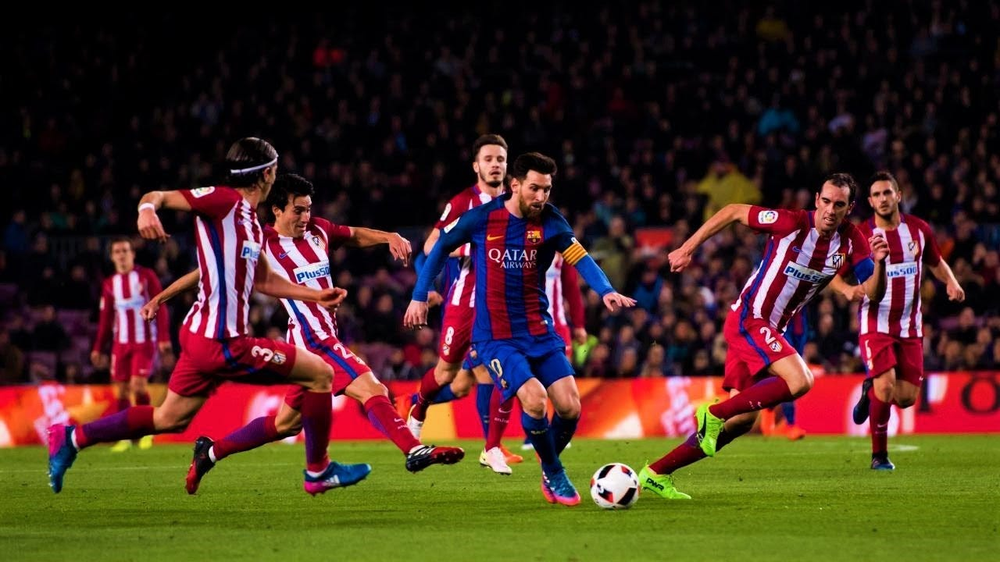
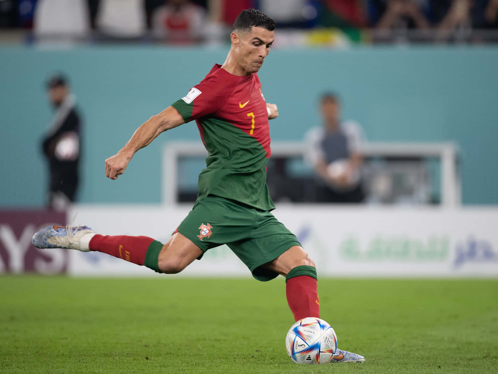
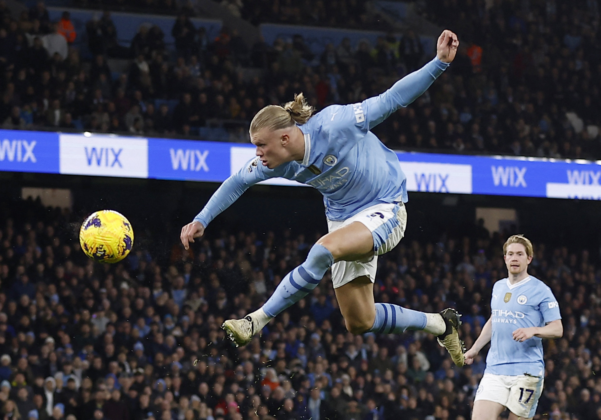

Player Profiles
Every soccer legend has a story, and these four players have written chapters of their own in the history of the beautiful game. Here's an in-depth look at the lives, careers, and achievements of Lionel Messi, Cristiano Ronaldo, Kylian Mbappé, and Erling Haaland.
The Top 4
Lionel Messi - The King of Football
Born in Rosario, Argentina, Lionel Messi moved to Barcelona at the age of 13 to pursue his dream. He became the club’s all-time top scorer and one of the greatest players to ever play the game. Messi’s move to Paris Saint-Germain in 2021 marked a new chapter in his legendary career.
- 7-time Ballon d'Or winner
- 4 Champions League titles
- All-time top scorer for Barcelona and La Liga
- FIFA World Cup winner (2022)
Cristiano Ronaldo - The Ultimate Competitor
Cristiano Ronaldo’s journey started in Madeira, Portugal, and he quickly rose to prominence at Sporting CP. From there, he achieved stardom at Manchester United, Real Madrid, Juventus, and now Al Nassr in Saudi Arabia. His dedication to perfecting his craft is unmatched, and his longevity in the game is a testament to his physical and mental strength.
- 5-time Ballon d'Or winner
- All-time leading scorer in the UEFA Champions League
- Euro 2016 and Nations League winner with Portugal
- 5 Champions League titles
Kylian Mbappé - The French Phenom

Kylian Mbappé burst onto the scene with Monaco, quickly establishing himself as a superstar. His move to Paris Saint-Germain only cemented his place among the world’s elite. A World Cup champion at 19, Mbappé’s blistering pace and intelligent movement make him a constant threat to defenders.
- FIFA World Cup winner (2018)
- Multiple Ligue 1 titles with Paris Saint-Germain
- Fastest player to score 30 goals in UEFA Champions League
- Top scorer in Ligue 1 four seasons in a row
Erling Haaland - The Nordic Powerhouse
Born into a soccer family, Erling Haaland’s rise to stardom was rapid. After successful stints in Austria and Germany, he joined Manchester City, where he continues to break goal-scoring records. Haaland’s combination of speed, strength, and deadly finishing makes him one of the most dominant strikers in modern football.
- Premier League Golden Boot winner
- Fastest player to score 20 Champions League goals
- Bundesliga Player of the Season (2020-21)
- Multiple domestic league titles